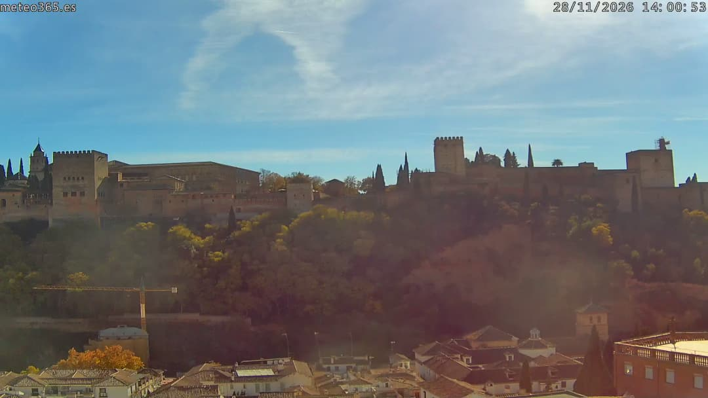

Todas las fotos de la cámara seguidas, hasta tres al día. Mueve el control o dale a reproducir.

Cámara meteo365. Temperatura — estación UGR Albayzín en el momento de la foto (si no hay dato — modelo Open-Meteo).